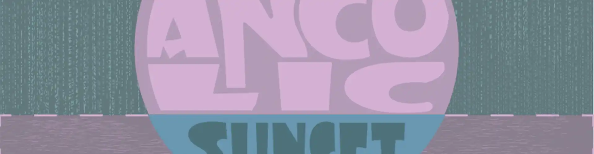
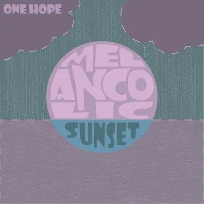
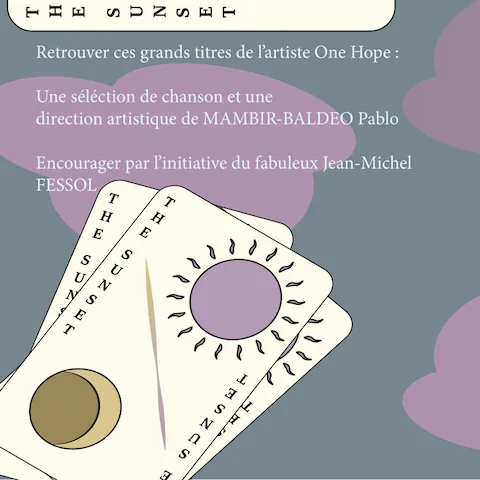
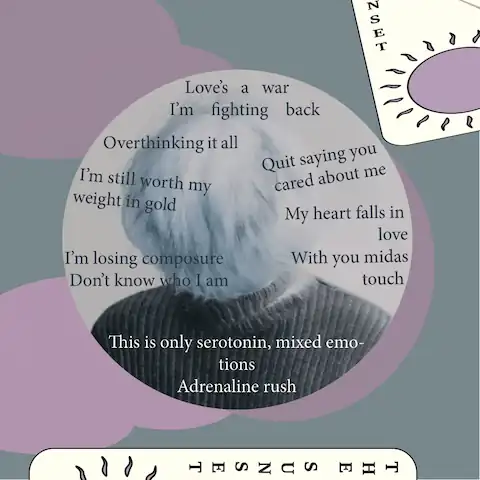
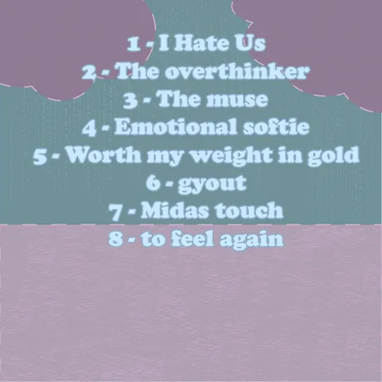

Pochette d'album
Ce projet est l’une des réalisations print dont je suis assez satisfait. J’ai choisi de faire l’album sur un artiste qui me plait, et j’ai « composé » son album en choisissant plusieurs de ses musiques que j’apprécie énormément et qui colle avec le nom de l’album choisi.
Le travail demandé était la réalisation d’un album de 4 pages ainsi que sa couverture en composition typographique.
Pendant ce travail universitaire, j’ai pu apprendre à utiliser InDesign pour réaliser un support Print, ainsi qu’à concevoir un album.




Logiciels utilisés
Compétences employées
- Design
- Réfléxion
- Dessin (Papier)